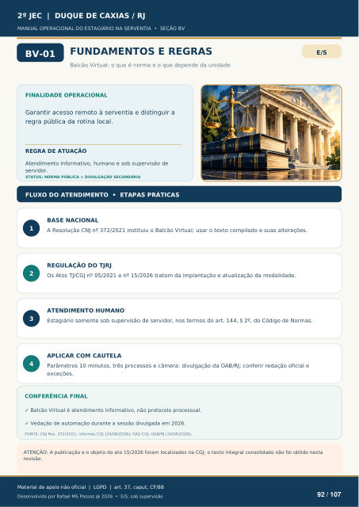

FUNDAMENTOS E REGRAS
Balcão Virtual: o que é norma e o que depende da unidade
FINALIDADE OPERACIONAL
Garantir acesso remoto à serventia e distinguir a regra pública da rotina local.
REGRA DE ATUAÇÃO
Atendimento informativo, humano e sob supervisão de servidor.
STATUS: NORMA PÚBLICA + DIVULGAÇÃO SECUNDÁRIA
FLUXO DO ATENDIMENTO • ETAPAS PRÁTICAS
BASE NACIONAL
A Resolução CNJ nº 372/2021 instituiu o Balcão Virtual; usar o texto compilado e suas alterações.
REGULAÇÃO DO TJRJ
Os Atos TJ/CGJ nº 05/2021 e nº 15/2026 tratam da implantação e atualização da modalidade.
ATENDIMENTO HUMANO
Estagiário somente sob supervisão de servidor, nos termos do art. 144, § 2º, do Código de Normas.
APLICAR COM CAUTELA
Parâmetros 10 minutos, três processos e câmera: divulgação da OAB/RJ; conferir redação oficial e exceções.
CONFERÊNCIA FINAL
Balcão Virtual é atendimento informativo, não protocolo processual.
Vedação de automação durante a sessão divulgada em 2026.
FONTE: CNJ Res. 372/2021; informes CGJ (24/08/2026); FAQ CGJ; OAB/RJ (24/09/2026).
ATENÇÃO: A publicação e o objeto do ato 15/2026 foram localizados na CGJ; o texto integral consolidado não foi obtido nesta
revisão.
Ver também o infográfico original (página 92)
